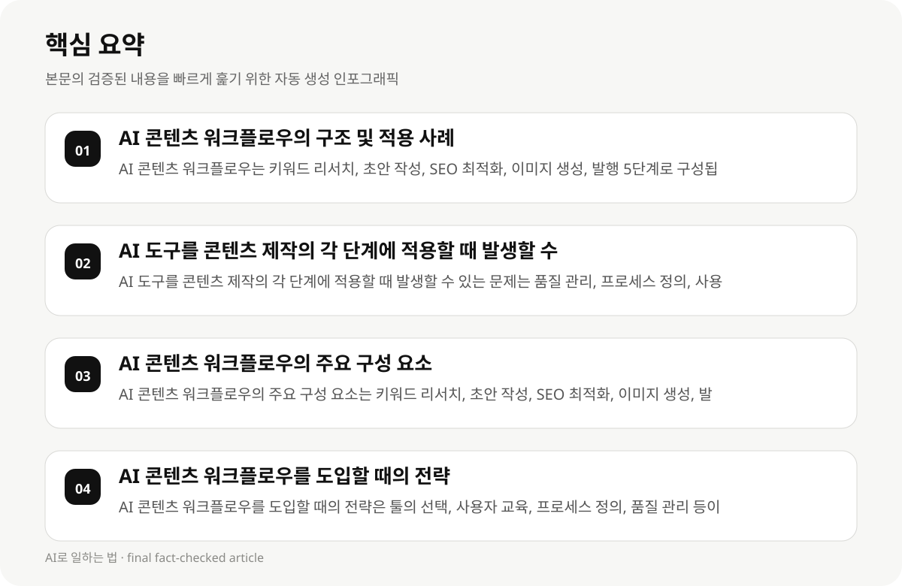

AI 콘텐츠 워크플로우의 구조 및 적용 사례 #
AI 콘텐츠 워크플로우는 키워드 리서치(Semrush·Ahrefs) → 리서치(Perplexity·ChatGPT) → 초안 작성(Claude·Writesonic) → SEO 최적화(Surfer SEO) → 이미지 생성(Midjourney·Canva) → 발행 5단계로 구성됩니다. 이 워크플로우는 콘텐츠의 품질과 생산성의 균형을 유지하며, 개발자들이 실제 도입 사례와 성공 요인을 기반으로 전략을 수립할 수 있습니다.
AI 콘텐츠 워크플로우는 실제 사용 사례와 데이터 기반 분석에 의존합니다. 예를 들어, 블로그 운영자들은 AI 도구를 사용하여 키워드 리서치를 수행하고, 초안 작성 후 SEO 최적화를 통해 콘텐츠의 검색성과 편집성을 높일 수 있습니다. 이 워크플로우는 툴의 가격 구조, 사용 목적, 사용자층에 따라 다양한 모델로 제공될 수 있습니다.
- AI 콘텐츠 워크플로우는 키워드 리서치, 초안 작성, SEO 최적화, 이미지 생성, 발행 5단계로 구성됩니다.
- AI 콘텐츠 워크플로우는 실제 사용 사례와 데이터 기반 분석에 의존합니다.
- AI 콘텐츠 워크플로우는 툴의 가격 구조, 사용 목적, 사용자층에 따라 다양한 모델로 제공됩니다.
AI 도구를 콘텐츠 제작의 각 단계에 적용할 때 발생할 수 있는 문제 #
AI 도구를 콘텐츠 제작의 각 단계에 적용할 때 발생할 수 있는 문제는 품질 관리, 프로세스 정의, 사용자 교육 등입니다. 예를 들어, 초안 작성 도구는 인간의 편집 역할을 수행하지만, 키워드 리서치 도구는 사용자에게 복잡한 설정을 요구할 수 있습니다.
AI 도구의 사용은 품질 관리, 프로세스 정의, 사용자 교육 등에 대한 고려가 필요합니다. 개발자들은 AI 도구의 사용을 통해 콘텐츠의 품질을 유지하면서도, 사용자에게 명확한 사용 방법을 제공해야 합니다.
- AI 도구를 콘텐츠 제작의 각 단계에 적용할 때 발생할 수 있는 문제는 품질 관리, 프로세스 정의, 사용자 교육 등입니다.
- AI 도구의 사용은 품질 관리, 프로세스 정의, 사용자 교육 등에 대한 고려가 필요합니다.
- AI 도구의 사용은 인간 편집자와 AI 자동화의 균형 유지에 의존합니다.
AI 콘텐츠 워크플로우의 주요 구성 요소 #
AI 콘텐츠 워크플로우의 주요 구성 요소는 키워드 리서치, 초안 작성, SEO 최적화, 이미지 생성, 발행입니다. 이 구성 요소는 콘텐츠의 품질과 생산성의 균형을 유지하며, 개발자들이 실제 도입 사례와 성공 요인을 기반으로 전략을 수립할 수 있습니다.
AI 콘텐츠 워크플로우는 인간 편집자와 AI 자동화의 균형 유지에 의존합니다. 예를 들어, 초안 작성 도구는 인간의 편집 역할을 수행하지만, 키워드 리서치 도구는 사용자에게 복잡한 설정을 요구할 수 있습니다.
- AI 콘텐츠 워크플로우의 주요 구성 요소는 키워드 리서치, 초안 작성, SEO 최적화, 이미지 생성, 발행입니다.
- AI 콘텐츠 워크플로우는 인간 편집자와 AI 자동화의 균형 유지에 의존합니다.
- AI 콘텐츠 워크플로우는 실제 사용 사례와 데이터 기반 분석에 의존합니다.

AI 콘텐츠 워크플로우를 도입할 때의 전략 #
AI 콘텐츠 워크플로우를 도입할 때의 전략은 툴의 선택, 사용자 교육, 프로세스 정의, 품질 관리 등이 포함됩니다. 예를 들어, 개발자들은 AI 도구를 사용하여 키워드 리서치를 수행하고, 초안 작성 후 SEO 최적화를 통해 콘텐츠의 검색성과 편집성을 높일 수 있습니다.
AI 콘텐츠 워크플로우는 실제 사용 사례와 데이터 기반 분석에 의존합니다. 개발자들은 AI 도구의 사용을 통해 콘텐츠의 품질을 유지하면서도, 사용자에게 명확한 사용 방법을 제공해야 합니다.
- AI 콘텐츠 워크플로우를 도입할 때의 전략은 툴의 선택, 사용자 교육, 프로세스 정의, 품질 관리 등이 포함됩니다.
- AI 콘텐츠 워크플로우는 실제 사용 사례와 데이터 기반 분석에 의존합니다.
- AI 콘텐츠 워크플로우는 인간 편집자와 AI 자동화의 균형 유지에 의존합니다.
AI 콘텐츠 워크플로우의 성공 요인 #
AI 콘텐츠 워크플로우의 성공 요인은 인간 편집자와 AI 자동화의 균형 유지, 실제 사용 사례, 데이터 기반 분석, 툴의 선택, 사용자 교육 등입니다. 예를 들어, 개발자들은 AI 도구를 사용하여 키워드 리서치를 수행하고, 초안 작성 후 SEO 최적화를 통해 콘텐츠의 품질과 생산성을 높일 수 있습니다.
AI 콘텐츠 워크플로우는 성공은 실제 사용 사례와 데이터 기반 분석에 의존합니다. 개발자들은 AI 도구의 사용을 통해 콘텐츠의 품질을 유지하면서도, 사용자에게 명확한 사용 방법을 제공해야 합니다.
- AI 콘텐츠 워크플로우의 성공 요인은 인간 편집자와 AI 자동화의 균형 유지, 실제 사용 사례, 데이터 기반 분석, 툴의 선택, 사용자 교육 등입니다.
- AI 콘텐츠 워크플로우는 성공은 실제 사용 사례와 데이터 기반 분석에 의존합니다.
- AI 콘텐츠 워크플로우는 인간 편집자와 AI 자동화의 균형 유지에 의존합니다.
AI 콘텐츠 워크플로우의 실패 사례 및 제약 조건 #
AI 콘텐츠 워크플로우의 실패 사례는 툴의 선택, 사용자 교육, 프로세스 정의, 품질 관리 등이 포함됩니다. 예를 들어, 초안 작성 도구는 인간의 편집 역할을 수행하지만, 키워드 리서치 도구는 사용자에게 복잡한 설정을 요구할 수 있습니다.
AI 콘텐츠 워크플로우의 제약 조건은 툴의 선택, 사용자 교육, 프로세스 정의, 품질 관리 등이 포함됩니다. 개발자들은 AI 도구의 사용을 통해 콘텐츠의 품질을 유지하면서도, 사용자에게 명확한 사용 방법을 제공해야 합니다.
- AI 콘텐츠 워크플로우의 실패 사례는 툴의 선택, 사용자 교육, 프로세스 정의, 품질 관리 등이 포함됩니다.
- AI 콘텐츠 워크플로우의 제약 조건은 툴의 선택, 사용자 교육, 프로세스 정의, 품질 관리 등이 포함됩니다.
- AI 콘텐츠 워크플로우는 인간 편집자와 AI 자동화의 균형 유지에 의존합니다.
AI 콘텐츠 워크플로우의 성공 요인 및 실패 요인 #
AI 콘텐츠 워크플로우의 성공 요인은 인간 편집자와 AI 자동화의 균형 유지, 실제 사용 사례, 데이터 기반 분석, 툴의 선택, 사용자 교육 등입니다. 예를 들어, 개발자들은 AI 도구를 사용하여 키워드 리서치를 수행하고, 초안 작성 후 SEO 최적화를 통해 콘텐츠의 품질과 생산성을 높일 수 있습니다.
AI 콘텐츠 워크플로우의 실패 요인은 툴의 선택, 사용자 교육, 프로세스 정의, 품질 관리 등이 포함됩니다. 개발자들은 AI 도구의 사용을 통해 콘텐츠의 품질을 유지하면서도, 사용자에게 명확한 사용 방법을 제공해야 합니다.
- AI 콘텐츠 워크플로우의 성공 요인은 인간 편집자와 AI 자동화의 균형 유지, 실제 사용 사례, 데이터 기반 분석, 툴의 선택, 사용자 교육 등입니다.
- AI 콘텐츠 워크플로우의 실패 요인은 툴의 선택, 사용자 교육, 프로세스 정의, 품질 관리 등이 포함됩니다.
- AI 콘텐츠 워크플로우는 인간 편집자와 AI 자동화의 균형 유지에 의존합니다.
AI 콘텐츠 워크플로우의 성공 요인 및 실패 요인 #
AI 콘텐츠 워크플로우의 성공 요인은 인간 편집자와 AI 자동화의 균형 유지, 실제 사용 사례, 데이터 기반 분석, 툴의 선택, 사용자 교육 등입니다. 예를 들어, 개발자들은 AI 도구를 사용하여 키워드 리서치를 수행하고, 초안 작성 후 SEO 최적화를 통해 콘텐츠의 품질과 생산성을 높일 수 있습니다.
AI 콘텐츠 워크플로우의 실패 요인은 툴의 선택, 사용자 교육, 프로세스 정의, 품질 관리 등이 포함됩니다. 개발자들은 AI 도구의 사용을 통해 콘텐츠의 품질을 유지하면서도, 사용자에게 명확한 사용 방법을 제공해야 합니다.
- AI 콘텐츠 워크플로우의 성공 요인은 인간 편집자와 AI 자동화의 균형 유지, 실제 사용 사례, 데이터 기반 분석, 툴의 선택, 사용자 교육 등입니다.
- AI 콘텐츠 워크플로우의 실패 요인은 툴의 선택, 사용자 교육, 프로세스 정의, 품질 관리 등이 포함됩니다.
- AI 콘텐츠 워크플로우는 인간 편집자와 AI 자동화의 균형 유지에 의존합니다.
AI 콘텐츠 워크플로우의 성공 요인 및 실패 요인 #
AI 콘텐츠 워크플로우의 성공 요인은 인간 편집자와 AI 자동화의 균형 유지, 실제 사용 사례, 데이터 기반 분석, 툴의 선택, 사용자 교육 등입니다. 예를 들어, 개발자들은 AI 도구를 사용하여 키워드 리서치를 수행하고, 초안 작성 후 SEO 최적화를 통해 콘텐츠의 품질과 생산성을 높일 수 있습니다.
AI 콘텐츠 워크플로우의 실패 요인은 툴의 선택, 사용자 교육, 프로세스 정의, 품질 관리 등이 포함됩니다. 개발자들은 AI 도구의 사용을 통해 콘텐츠의 품질을 유지하면서도, 사용자에게 명확한 사용 방법을 제공해야 합니다.
- AI 콘텐츠 워크플로우의 성공 요인은 인간 편집자와 AI 자동화의 균형 유지, 실제 사용 사례, 데이터 기반 분석, 툴의 선택, 사용자 교육 등입니다.
- AI 콘텐츠 워크플로우의 실패 요인은 툴의 선택, 사용자 교육, 프로세스 정의, 품질 관리 등이 포함됩니다.
- AI 콘텐츠 워크플로우는 인간 편집자와 AI 자동화의 균형 유지에 의존합니다.